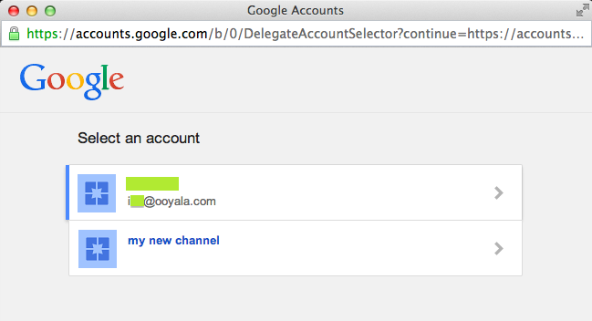

You can syndicate content to your YouTube channel in Backlot using your Google YouTube login account. We use the OAuth 2.0 protocol to authorize Backlot users to publish (syndicate) videos to YouTube. With this type of authorization, you can login to your Backlot account, click Authorize and login to your Google YouTube account in a pop-up window. Once you login to your Google YouTube account, you click OK and start exporting your Backlot videos (syndication) to YouTube.
You can syndicate content to your YouTube channel in Backlot using your Google YouTube login account. We use the OAuth 2.0 protocol to authorize Backlot users to publish (syndicate) videos to YouTube. With this type of authorization, you can login to your Backlot account, click Authorize and login to your Google YouTube account in a pop-up window. Once you login to your Google YouTube account, you click OK and start exporting your Backlot videos (syndication) to YouTube.
For YouTube syndication (that is, exporting videos to YouTube), Backlot automatically uploads the source files of videos directly to YouTube, which handles all transcoding and the generation of preview images.
Syndication with YouTube is "one-way": your settings and content on Backlot are pushed to YouTube, but settings and content on YouTube are not pulled to Backlot.
In Backlot we link a syndication feed to a YouTube channel through a YouTube login account. When you set up a syndication feed, Backlot prompts you to select a YouTube account to authorize the feed. If you have multiple:
YouTube login accounts, Backlot displays a window listing your accounts and prompts you to select one of account for authorizing the syndication feed.
YouTube channels associated with a YouTube account, Backlot displays a window listing your channels and prompts you to select one of the channels for the syndication feed.
If you select the same YouTube account login for another syndication feed, Backlot prompts you to use a different account login. You can remove the link between a Backlot syndication feed and an authorized YouTube login account and authorize a different YouTube login account for the syndication. See the topic, “Choosing Other YouTube Accounts for Syndication” for important information about this option.
The following, “Selecting From Multiple YouTube Accounts” topic, provides more details about the relationship between the Backlot syndication, the OAuth-based account authorization, and handling multiple YouTube accounts and channels.
Backlot supports two syndication privacy settings: public or private. In Backlot, when you set up a syndication to YouTube:
By default your videos are public.
You can set the privacy option to either public or private.
You can also mark an individual asset with a public or private setting in the Backlot Manage tab. Settings at the asset level override the settings at the syndication feed.
To change the privacy setting on videos previously syndicated to YouTube, change the setting on the individual asset in the MANAGE page, Detailssubtab for the specific asset, as shown in the following example.
| If you... | Then... |
|---|---|
| Select All content, | Backlot uploads all videos with or without labels to YouTube. |
| Select Add Labels, |
Backlot uploads all videos marked with the specified labels to YouTube. Caution: If you already have videos uploaded with no labels, and you select this option, the videos without labels are deleted in YouTube. |
| Select Add Labels and later select All content, | Backlot uploads the videos with labels to YouTube. Then, when All content is selected, Backlot uploads any content without a label. |
| Selected All content and later select Add Labels, | Backlot uploads all videos with and without labels to YouTube. When Add Labels is selected Backlot deletes any existing prior videos without the label and adds videos with the label. |
| Remove a Label (in Backlot or by editing the feed itself) | Deletes all videos with that label from the YouTube account. Even if the video has more than one label, if you delete one label associated with that video, the video is deleted from the YouTube account. This means that any analytics data formerly associated with the videos is also lost. |
You may have more than one Google YouTube account (a personal account, a corporate account, or other types). In Backlot, you can select one of your multiple YouTube user accounts to syndicate videos to YouTube.
When You Have Multiple YouTube Channels Associated with a Login Account
In YouTube, with each login account that you create, you get an implicit default channel. You can also create more channels or a YouTube channel manager can give a YouTube user access to manage a channel. After authorizing a syndication through your YouTube account login, if you have multiple channels Backlot displays another window to let you select a channel for the syndication. The following image shows an example of the Backlot window that prompts you to select an account (channel) and lists your available YouTube channels.

If you do have multiple Google YouTube account logins, when you click Authorize, Backlot will list all of your known Google YouTube accounts. The previous figure illustrates the pop up window showing a user with multiple Google YouTube login accounts. Select one account and follow the steps to complete the syndication. See the following topic, “Steps to Syndicate to YouTube.” You can only select one Google YouTube account to associate with a particular syndication feed.
While Backlot does let you associate a syndication with another one of your accounts, once you do so, you cannot modify the original videos that you uploaded to YouTube under the previous account. When you switch accounts, all videos uploaded on the previous account stay on YouTube but they will be un-managed. These videos (and any new videos) will be uploaded separately from Backlot to the other YouTube account and will have new videoIDs.If you do need to associate an existing Backlot syndication to YouTube with one of your other accounts:
Backlot supports linking a syndication feed to a single YouTube channel. Only one syndication feed can manage that channel (even if the syndication is authenticated through different YouTube accounts). Backlot allows you to switch from one YouTube account to another and still continue to manage the video assets. You can do this if (and only if) both accounts manage the same YouTube channel.
YouTube itself is designed such that you cannot directly replace the content of a previously uploaded (or syndicated) video. Only new video content is assigned a new identifier (ID) by YouTube. If you want to remove syndicated videos uploaded to YouTube and replace them, you need to delete them from within YouTube or use the Backlot remove labels option to delete them. All uploaded content will be assigned new YouTube video IDs.
For bulk content replacement in a syndication, you must delete the videos in YouTube, replace the content in your Backlot syndication, and follow the steps to upload the new syndicated assets to YouTube. Each new asset will have a unique YouTube identifier.
To create a syndication to YouTube (export videos to YouTube):
The Backlot UI opens.
A new YouTube syndication is created.
The syndication is authorized.
If you are unsure about your account setup or need other help, contact Ooyala Technical Support.